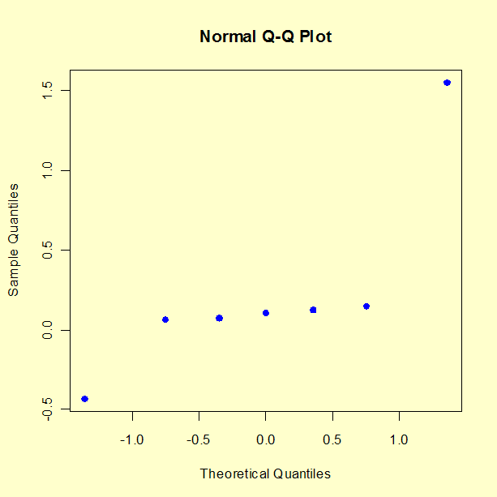
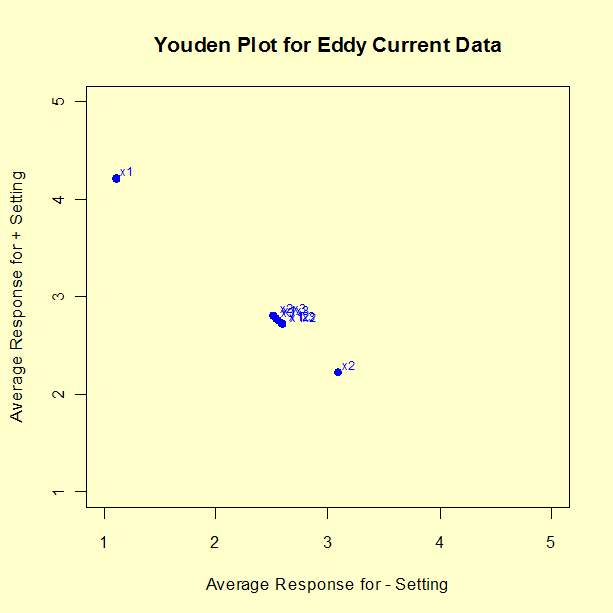

|
1.
Exploratory Data Analysis
1.3. EDA Techniques 1.3.5. Quantitative Techniques 1.3.5.18. Yates Algorithm
|
|||||||||||||||||||||
| Identify Important Factors |
We want to select the most appropriate model to represent our data.
This requires balancing the following two goals.
Seven criteria are utilized to define important factors. These seven criteria are not all equally important, nor will they yield identical subsets, in which case a consensus subset or a weighted consensus subset must be extracted. In practice, some of these criteria may not apply in all situations. These criteria will be examined in the context of the eddy current data set. The parameter estimates computed using least-squares analysis are shown below.
Parameter Estimate
--------- --------
Mean 2.65875
X1 1.55125
X2 -0.43375
X1*X2 0.06375
X3 0.10625
X1*X3 0.12375
X2*X3 0.14875
X1*X2*X3 0.07125
In practice, not all of these criteria will be used with every analysis (and some analysts may have additional criteria). These critierion are given as useful guidelines. Most analysts will focus on those criteria that they find most useful. |
||||||||||||||||||||
| Criteria for Including Terms in the Model | The seven criteria that we can use in determining whether to keep a factor in the model can be summarized as follows. The first four criteria focus on parameter estimates with three numeric criteria and one graphical criteria. The fifth criteria focuses on effects, which are twice the parameter estimates. The last two criteria focus on the residual standard deviation of the model. We discuss each of these seven criteria in detail in the sections that following. | ||||||||||||||||||||
| Parameters: Engineering Significance |
The minimum engineering significant difference is defined as
That is, declare a factor as "important" if the parameter estimate is greater than some a priori declared engineering difference. This implies that the engineering staff have in fact stated what a minimum difference will be. Oftentimes this is not the case. In the absence of an a priori difference, a good rough rule for the minimum engineering significant Δ is to keep only those factors whose parameter estimate is greater than, say, 10% of the current production average. In this case, let's say that the average detector has a sensitivity of 2.5 ohms. This would suggest that we would declare all factors whose parameter is greater than 10 % of 2.5 ohms = 0.25 ohm to be significant (from an engineering point of view). Based on this minimum engineering significant difference criterion, we conclude that we should keep two terms: X1 and X2. |
||||||||||||||||||||
| Parameters: Order of Magnitude |
The order of magnitude criterion is defined as
Based on the order-of-magnitude criterion, we thus conclude that we should keep two terms: X1 and X2. A third term, X2*X3 (0.14875), is just slightly under the cutoff level, so we may consider keeping it based on the other criterion. |
||||||||||||||||||||
| Parameters: Statistical Significance |
Statistical significance is defined as
The "2" comes from normal theory (more specifically, a value of 1.96 yields a 95 % confidence interval). More precise values would come from t-distribution theory. The difficulty with this is that in order to invoke this criterion we need the standard deviation, σ of an observation. This is problematic because
This results in keeping three terms: X1 (1.55125), X2 (-0.43375), and X1*X2 (0.14875). |
||||||||||||||||||||
| Parameters: Probability Plots |
Probability plots
can be used in the following manner.
Since the half-normal probability plot is only concerned with parmeter magnitudes as opposed to signed parameters (which are subject to the vagaries of how the initial factor codings +1 and -1 were assigned), the half-normal probability plot is preferred by some over the normal probability plot. |
||||||||||||||||||||
| Normal Probablity Plot of Parameters |
The following normal probability plot shows the parameter estimates
for the eddy current data.
 For the example at hand, the probability plot clearly shows two factors (X1 and X2) displaced off the line. All of the remaining five parameters are behaving like random drawings from a normal distribution centered at zero, and so are deemed to be statistically non-significant. In conclusion, this rule keeps two factors: X1 (1.55125) and X2 (-0.43375). |
||||||||||||||||||||
| Averages: Youden Plot | A Youden plot can be used in the following way. Keep a factor as "important" if it is displaced away from the central-tendancy "bunch" in a Youden plot of high and low averages. By definition, a factor is important when its average response for the low (-1) setting is significantly different from its average response for the high (+1) setting. (Note that effects are twice the parameter estimates.) Conversely, if the low and high averages are about the same, then what difference does it make which setting to use and so why would such a factor be considered important? This fact in combination with the intrinsic benefits of the Youden plot for comparing pairs of items leads to the technique of generating a Youden plot of the low and high averages. | ||||||||||||||||||||
| Youden Plot of Effect Estimates |
The following is the Youden plot of the effect estimatess for the eddy
current data.
 For the example at hand, the Youden plot clearly shows a cluster of points near the grand average (2.65875) with two displaced points above (factor 1) and below (factor 2). Based on the Youden plot, we conclude to keep two factors: X1 (1.55125) and X2 (-0.43375). |
||||||||||||||||||||
| Residual Standard Deviation: Engineering Significance |
This criterion is defined as
This criterion is different from the others in that it is model focused. In practice, this criterion states that starting with the largest parameter, we cumulatively keep adding terms to the model and monitor how the residual standard deviation for each progressively more complicated model becomes smaller. At some point, the cumulative model will become complicated enough and comprehensive enough that the resulting residual standard deviation will drop below the pre-specified engineering cutoff for the residual standard deviation. At that point, we stop adding terms and declare all of the model-included terms to be "important" and everything not in the model to be "unimportant". This approach implies that the engineer has considered what a minimum residual standard deviation should be. In effect, this relates to what the engineer can tolerate for the magnitude of the typical residual (the difference between the raw data and the predicted value from the model). In other words, how good does the engineer want the prediction equation to be. Unfortunately, this engineering specification has not always been formulated and so this criterion can become moot. In the absence of a prior specified cutoff, a good rough rule for the minimum engineering residual standard deviation is to keep adding terms until the residual standard deviation just dips below, say, 5 % of the current production average. For the eddy current data, let's say that the average detector has a sensitivity of 2.5 ohms. Then this would suggest that we would keep adding terms to the model until the residual standard deviation falls below 5 % of 2.5 ohms = 0.125 ohms.
Residual
Model Std. Dev.
----------------------------------------------------- ---------
Mean + X1 0.57272
Mean + X1 + X2 0.30429
Mean + X1 + X2 + X2*X3 0.26737
Mean + X1 + X2 + X2*X3 + X1*X3 0.23341
Mean + X1 + X2 + X2*X3 + X1*X3 + X3 0.19121
Mean + X1 + X2 + X2*X3 + X1*X3 + X3 + X1*X2*X3 0.18031
Mean + X1 + X2 + X2*X3 + X1*X3 + X3 + X1*X2*X3 + X1*X2 NA
Based on the minimum residual standard deviation criteria, and
we would include all terms in order to drive the
residual standard deviation below 0.125. Again, the 5 % rule is a
rough-and-ready rule that has no basis in engineering or
statistics, but is simply a "numerics". Ideally, the engineer has
a better cutoff for the residual standard deviation that is based
on how well he/she wants the equation to peform in practice. If
such a number were available, then for this criterion and data set
we would select something less than the entire collection of terms.
|
||||||||||||||||||||
| Residual Standard Deviation: Statistical Significance |
This criterion is defined as
That is, declare a term as "important" until the cumulative model that includes the term has a residual standard deviation smaller than σ. In essence, we are allowing that we cannot demand a model fit any better than what we would obtain if we had replicated data; that is, we cannot demand that the residual standard deviation from any fitted model be any smaller than the (theoretical or actual) replication standard deviation. We can drive the fitted standard deviation down (by adding terms) until it achieves a value close to σ, but to attempt to drive it down further means that we are, in effect, trying to fit noise. In practice, this criterion may be difficult to apply because
For the current case study:
Thus for this current case, this criteria could not be used to yield a subset of "important" factors. |
||||||||||||||||||||
| Conclusions |
In summary, the seven criteria for specifying "important" factors
yielded the following for the eddy current data:
Such conflicting results are common. Arguably, the three most important criteria (listed in order of most important) are:
Scanning all of the above, we thus declare the following consensus for the eddy current data:
|
||||||||||||||||||||